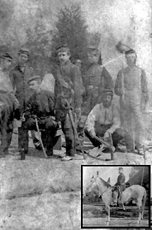

|

NAME: William Findlay Rogers
BORN: 1820
DIED: 1899
ALLEGIANCE: Union
HIGHEST RANK: Brevet brigadier general
UNIT: 21st New York Infantry
RECORD: Organized Company C, 74th New York State
Militia, in April 1861. Enlisted in the 21st New York
Infantry soon thereafter. Elected colonel on May 20. Wounded
at the Battle of South Mountain, Maryland, on September 14,
1862. Assumed command of the 3rd Brigade briefly on December
12. Mustered out on May 18, 1863. Appointed provost marshal
of New York's 30th District in 1863. Made a brevet brigadier
general on March 13, 1865.
|
|
At a young age, William Findlay Rogers faced a tough
decision: should he enter the military, where his father had
found success, or strike out on his own? In a roundabout
way, he managed to do both.
His father, Thomas Jones Rogers, a naval officer in
Philadelphia, Pennsylvania, died when William was only 12
years old. Forced to leave school, the boy found a job as an
apprentice printer at the Easton Whig. In two years
he mastered the trade, and by age 20 he had established his
own weekly paper in northern Pennsylvania. Less than a
decade later, he became manager of the Republic in
Buffalo, New York. But something was still missing: he
longed For the soldier's life, the life his father had led.
So, he enlisted in the Buffalo City Guards for a taste of
things military
At the start of the Civil War, Rogers recruited fellow
guardsmen for a military unit that became Company C of the
74th New York State Militia. Rogers was the captain. Before
long, it was clear the unit would never see action, so the
disgusted militiamen enlisted in the 21st New York Infantry.
The men elected Rogers colonel on May 20. In the photo to
the left he is flanked by members of his staff, on the
inset, he sits astride his horse, "Proofreader."
The 21st served for more than a year in Washington, D.C.,
and Virginia. Then, on September 14, 1862, Rogers earned a
commendation from Brigadier General Abner Doubleday,
commander of the I Corps' 1st Division, for his "bravery and
quick thinking" at the Battle of South Mountain, Maryland.
Three months later, Rogers assumed temporary command of the
division's 3rd Brigade, just in time to lead it at
Fredericksburg, Virginia. Although the brigade reported 67
casualties, Rogers saw the bright side: he and his men had
fought on the Federal left flank and thus were spared from
the futile assault against Marye's Heights on the right.
Fredericksburg was Rogers's last fight. The 21st was soon
assigned to the Provost Marshal Guard, and served quietly
near Aquia Creek, Virginia, until it was mustered out on May
18, 1863. Rogers went home to Buffalo, and became provost
marshal of New York's 30th District. He was made a brevet
brigadier general on March 13, 1865. After the war, he
parlayed his military deeds into a thriving political
career, serving as mayor of Buffalo from 1868 to 1869 and as
a member of the U.S. House of Representatives from 1883 to
1885. He then accepted the job Of superintendent of the New
York Soldiers and Sailors Home, remaining there until 1897.
He died two years later and was interred in Forest Lawn
Cemetery in Buffalo.
Source: Civil War Times Illustrated
37:6 (December 1998), 128.
|